一）历史的必然
历史从不缺乏偶然性，然而从更大的维度来看，必然性压倒了偶然性。
比如二张中德国与美国的对抗，冷战中俄国与美国的对抗，充满了偶然性事件。常常会有人谈起这些偶然性的事件，叹息道要是不怎么怎么样的话，战争的结局将会完全改写。
然而不管这些事件如何发生，从更大的维度上来说，最终的胜负取决于双方的经济体量大小。从这个角度来说，最终的胜负其实是一种必然。
然而并不是说个人就起不到任何作用了，在《论个人在历史上的作用》一书中，普列汉诺夫就阐述了个人在历史上能起到的作用。
首先他承认了历史的进程是不以人的意志为转移的，每当历史需要的时候，就会天降大任于一人，由他来推动历史的前进。
然而并不是说这个人的出现就无关紧要了。要是没有这个人的出现，历史虽然最终还是会朝着那个方向前进，却可能无法以原有的进度前进，甚至可能晚上好多年。
二）模型
既然如此，看到历史大的进程对于个人来说就很重要了。
个人要想试图预测这些大的进程，必然需要通过观察，总结出一些模型以便展开预测。好的模型应该可以解释绝大部分的我们能观测到的数据，并且可以对模型中的一些参数进行解释。
比如说中国vs美国的互联网产业的未来发展，就是对置身于这个行业的程序员来说的一种大的历史进程。而996，则是受这个大的历史进程所影响，展现出来的一种行业态势。
不同的地区，不同的行业会有不同的行业态势。下面这张图，每一个数据点都代表了某个地区的某个产业内某个岗位的情况。
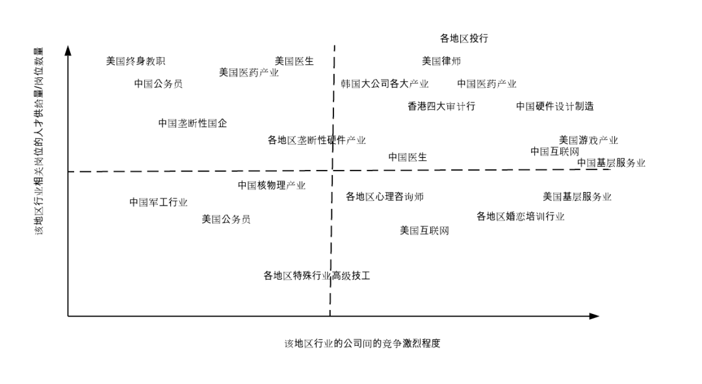
图中的纵坐标代表了这个地区的相关行业的人才稀缺度，可以大致用该地区的人才供给量比上该岗位的数量来估算。我们可以用一个比较直观的方法来估算这个量：
如果一个地区的行业内的人才需要专门让猎头来负责招聘，或者长年挂着招聘广告，则该地区的相关人才可以被认为更为稀缺。
如果一个地区的行业内的岗位需要通过各类考试，或者需要通过层层筛选，在众多竞争者中胜出，则可以认为该地区的相关人才不太稀缺，甚至过于泛滥。
图中的横坐标代表了这个地区的相关行业的公司间的竞争激烈程度。这个量我们也可以大致这样来理解：
如果一个地区该行业的从业公司经常出现大规模裁员，甚至倒闭，相关行业内的小公司不断涌现，层出不穷，则可以认为该地区该行业竞争更为激烈。
相对应的，如果一个地区该行业的从业公司具有垄断性质，或者具有政府背景，新成立的公司很难进入，则可以认为该地区该行业竞争不太激烈。
三）四个区域，三种行业类型
这个图用两个量，可以大致地划分出四个区域。每个地区的某个行业都可以被标定在某个区域中。
A Type: 人才不稀缺，公司间竞争激烈
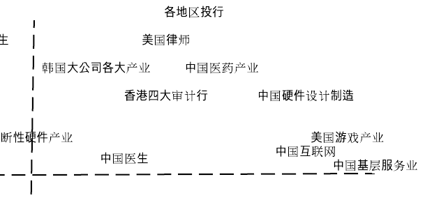
这个行业类型位于图中的右上角区域，行业特点是从业人员一般加班极为严重。这里面其实还可以分为两类，一类A1是想入行的人实在太多，公司层面对于压榨员工毫无顾忌，反正你不愿意有的是人愿意，这一类偏向该区域的左上方。另一类A2是竞争实在太过激烈，公司层面不加班就会倒，偏向该区域的右下方。
比较典型的包括以下这一些：
中国的互联网产业。中国的理工科学生很多，由于其高工资，希望进入这个行业的人也很多。同时这个行业也竞争非常激烈，有的时候风口来了的时候，甚至会有百团大战这样的场面发生。
各地区的投行产业。由于工资奖金很高，因此不管在哪里想进入这个行业的年轻人都很多。这个行业也竞争非常激烈，工作时间和压力都非常大。
美国的游戏产业。在美国希望进入游戏产业的人非常多，独立的游戏开发者也很多，因此人才供给量很大。同时由于这个行业新公司层出不穷，因此竞争非常激烈。自然地这个行业的从业者工作时间和压力非常大。
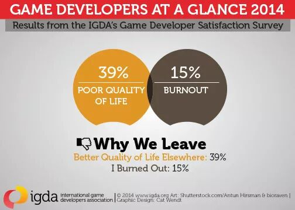
B Type: 人才不稀缺，公司间竞争不那么激烈
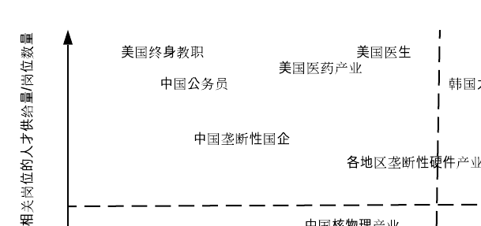
这个行业类型位于图中的左上角区域，区域的特点是从业人员的入行门槛非常高，这里的门槛可以是家里强劲的关系，也可以是需要突破的重重竞争或是多年苦读。不过一旦通过重重竞争，入行以后这个行业的工作压力一般不会太高，有一些甚至闲得可怕。
比较典型的包括以下这一些：
中国的公务员，垄断性国企。入行需要强劲的关系，或者通过重重竞争。一旦进入体系，还是非常轻松的。
美国的终身教职。在美国获得教职非常非常难，要在众多博士中脱颖而出，进入前3-5%（也有的是博士非常难申请）才有机会获得终身教职。不过一旦进入，可以选择过得非常轻松，当然也有的教授会选择继续努力，争取更多funding。
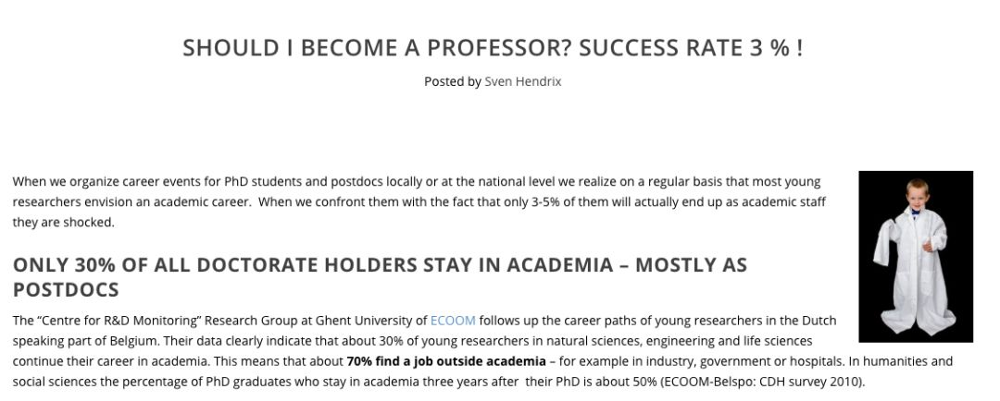
美国的医生。据说入行需要苦读好多年，然后再实习好多年，而且要花费大量的学费。不过一旦可以开始执业，生活可以过得非常轻松且富裕。
C Type: 人才稀缺，公司间竞争激烈或不激烈
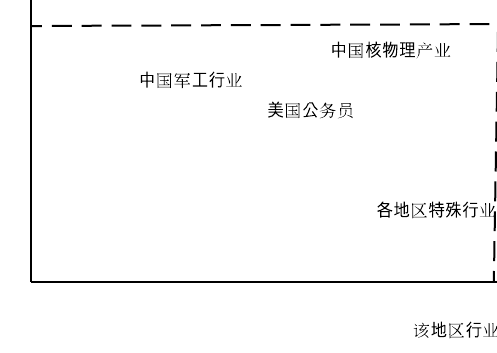
图中左下区域
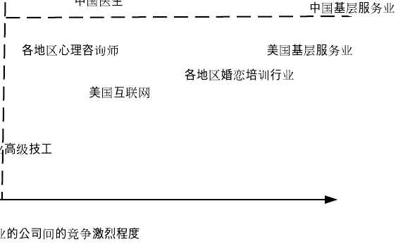
图中右下区域
这个行业类型位于图中的左下与右下， 区域的核心是市场上相关的人才相比起岗位来说非常少。
一般来说会有两种情况造成这个局面：
第一种情况是由于相关行业的有一些原因，导致大家不愿意从事这个行业。比如说这个行业薪酬比较低（美国基层服务业），比较辛苦，这个行业对人有害（核物理），或者这个行业对个人有所限制（军工行业）。
第二种情况是由于相关行业突然爆发，需求大量增加，而相关的人才供给一下子无法跟上，因为合格的人才需要数年的培养才能符合行业的需求。
入行以后这个行业的工作压力非常取决于该行业的竞争激烈程度，不过通常来说要比前两类入行门槛低很多，而且工作压力小很多。毕竟要是招不到人还要一心提高门槛或者加大工作压力，人家自然可以跳槽到别的地方去做。
比较典型的包括以下这一些：
美国的互联网从业人员：相比中国来说，在欧美国家总体来说理工科的人比较少，而由于互联网产业突然的大爆发，导致相关的行业出现大量的需求。硅谷这边，即使从中国和印度吸引来了大量的人才，依然没有办法满足其强劲的需求。而且硅谷这边有一种崇尚10x工程师的文化，认为一个厉害的工程师要比10个平庸的工程师产出要高，因此宁愿招不到厉害的，也不招平庸的工程师。
由于我自己是相关从业者，这个地方是体会很深的。我基本LinkedIn每周都会收到各种猎头的招聘邮件，各种公司的都有。我的同事，尤其是那些比我资历更深的同事，必然会比我收到更多更多这样的招聘邮件。
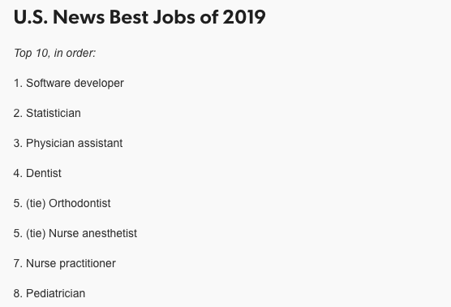
各个地区的心理咨询师：随着人们对心理健康的逐渐重视，这方面的需求越来越大，然而合格的从业人员的数量远远跟不上这个需求。目前国内的心理咨询师每小时的价格从300-800每小时不等。
各个地区的特殊行业特殊技工：由于高级技工需要长时间培养，而且某些工种的高级技工本来数量就很少，因此供给很小。而相对应的，有的时候需求是硬性的，不然就会造成巨大的经济损失。
注：
这个表格所阐述的规律仅仅是某个地区某行业的平均工作强度。我承认某个地区某行业内会出现不同的公司，有的公司可能会比别的公司工作强度大很多。这个规律只是想找出工作强度的平均值，并且试图用横坐标和纵坐标上的这两个变量去解释这个工作强度平均值。
四）中国互联网996的必然性
看懂了上面那张图，中国互联网996背后的逻辑就非常清晰明白了。
中国互联网产业之所以实行996，是因为
1）中国的互联网公司间的竞争更加激烈
2）中国互联网行业的人才更加不稀缺。
中国的互联网竞争更加激烈这个现象其实还蛮明显的，比如说在中国，动不动出现百团大战，打车软件大战，单车大战。而在美国，比如在打车软件这一块，大概一共就出现过Uber，Lyft，Curb等大约5-10家创业公司，而且很多早早就死掉了。
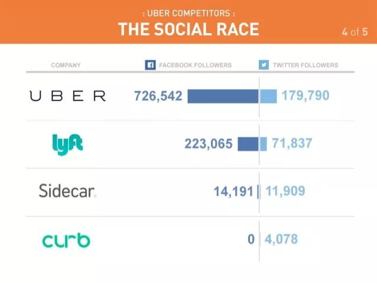
我觉得两边之所以公司的竞争激烈程度差别这么大，主要有两方面的原因。
一是人才方面，由于美国的教育体系并不注重培养大量的理工科人才，靠谱的程序员在美国更加稀缺。因此美国的创业公司在招聘方面的人力成本更高。稍微小一定的创业公司，如果没有真正领先的技术或者无法替代的资源，很难说服人才的加入。
二是资金方面，美国的投资方非常忌讳抄袭别人的想法，因为这样子会造成恶性竞争，最终拉低投资的回报率。一般来说，如果有一家创业公司已经在某个领域有了明显的优势，后续跟进的创业公司并不会很多，那些同一时期起来的，明显做的不如头一名好的公司也会很快死掉。
所以造成996的两条原因中，中国的互联网公司间的竞争更加激烈这条原因，一定程度上也是由中国互联网行业的人才更加不稀缺导致的。
这么来说的话，996的根源其实就是因为中国是一个人口大国，而且理工科教育不错，造就了大量合格的人才，超出了公司的实际需要。
五）未来如何演化
一方面，中国的理工科教育会继续好下去，优秀的人才会继续在互联网行业被持续培养出来，因此中国互联网行业的人才过剩问题会持续存在，甚至愈演愈烈。
另一方面，中国互联网行业在国际上的竞争力会进一步增大，因此整个行业对人才的需求也会进一步增加。只不过增速应该没有人才的增速那么快。
因此，我认为中国的互联网行业的996并不会好转，甚至会逐渐向韩国靠拢，变得更加严重。
美国方面，我认为相关的人才也会越来越充裕，不过由于本土的人才基数较少，而且移民政策也越来越不友好，因此这个趋势发生的速度并不会特别快。
另一方面，美国的互联网行业的发展还是非常良性的，而且仍然有大量的比中国先进的地方。由于互联网行业至少在未来的10年仍将飞速发展，其对人才的需求将会继续增加。
因此，我认为美国的互联网行业的955并不会有大的改变，可能会慢慢变成965或者975，不过变化的速度不会特别快。
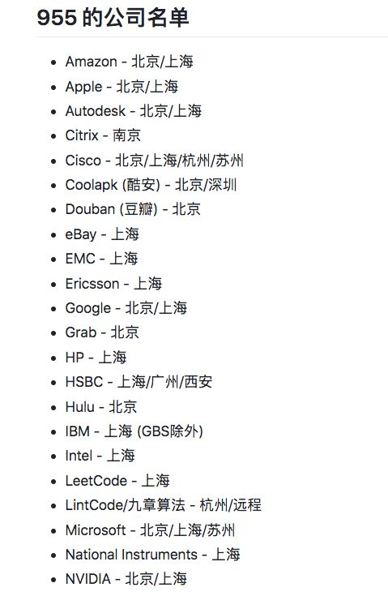
https://github.com/formulahendry/955.WLB 上955的公司大部分是外企
六）个人的出路
我们作为一个人才，关注人才市场上的供需关系总是有一定必要性的。不管我们个人出于何种原因，选择在美国或者中国工作，未来的人才供需关系必将影响我们个人的职业回报及稳定性。
正是由于供大于求，才造成了中国互联网严重的996现象。而逆向思考的话，如果找到中国未来求大于供的人才类型，则是破解996的一把有力钥匙。
比如说，未来的中国，尤其是互联网行业，走出国门，逐渐变得更加国际化是一条必走的道路。而有国际化视野的人才将是任何企业在这条道路上不可或缺的助力。
又比如说，中国的理工科教育虽然相对成熟，逻辑思辨方面的教育则相对落后。而在中国，产品经理，尤其是高级别的产品经理对这方面的素质要求尤其高。因此反其道而行之，在中国从程序员转产品经理，说不定是破解996的另一种方向。（当然国内互联网企业的基层产品经理肯定是要996的，毕竟可替代人才很多很多）。
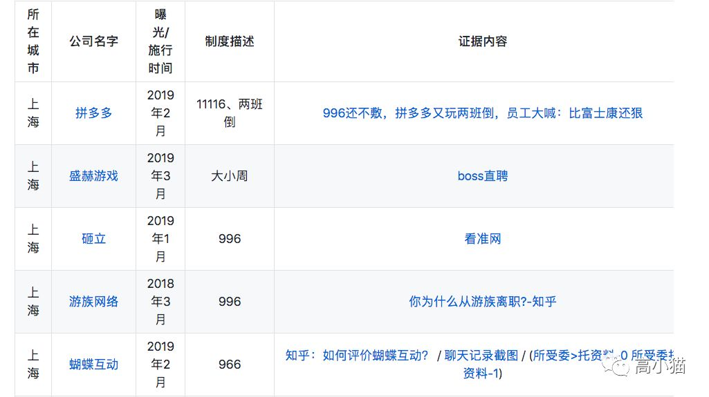
https://github.com/996icu/996.ICU/blob/master/blacklist/README.md 996的公司名单，点击阅读原文查看完整名单